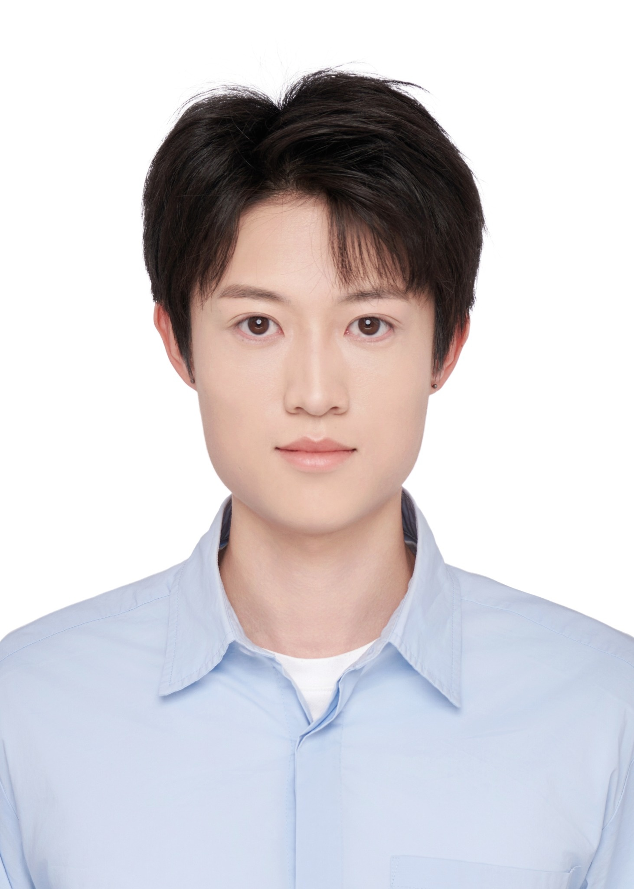

Yinting (Justin) Huang
University of Cambridge
I am a researcher in computer architecture with interests in memory systems, hardware prefetching, microarchitectural adaptation, and intelligent mechanisms for future computing systems. My work combines architecture, probabilistic methods, and systems evaluation to improve performance and efficiency.

Efficient, adaptive, and intelligent computer systems.
Memory Systems
Hardware prefetching, cache management, memory-level parallelism, metadata efficiency, and data movement.
Microarchitecture
Adaptive CPU mechanisms, hardware–software co-design, performance analysis, and architectural evaluation.
AI for Systems
Probabilistic and learning-based methods for robust online decisions in constrained hardware environments.
Academic and industry research.
PhD in Computer Science
University of Cambridge · Research in computer architecture and memory systems.
CPU Architecture Research Engineer
Huawei Newton Research Centre · Microarchitecture, hardware prefetching, simulation, and performance analysis.
Undergraduate Researcher
Imperial College London · FPGA acceleration.
Background, recognition, and service.
Education
- PhD in Computer Science, University of Cambridge, 2026–
- MEng / prior degree, institution, classification
Awards & Recognition
- Add scholarships, prizes, paper awards, or research recognition
- Add competitive grants or travel awards
Professional Service
- Reviewer / artifact evaluation / workshop service
- Student membership and professional societies
Research Tools
- ChampSim, gem5, C/C++, Python
- Architecture simulation, workload analysis, statistical evaluation
Selected personal work.
Outside research, I photograph landscapes, architecture, streets, and travel. This section is intentionally separated from the academic profile so the site retains a formal research identity while still showing personal interests.
Research collaboration and academic enquiries.
Department of Computer Science and Technology
University of Cambridge
Email: your-crsid@cam.ac.uk